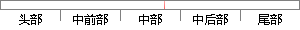

任务进入延时后，系统应当重新引发一次调度，运行下一个就绪任务。
片段位置图

相似结果
相似片段：1.1 前后台调度方式 在此类系统中,应用程序一般是...任务来运行,而无优先级分时轮转的任务级响 应延时...调度器将调度下一个最高优先级的就绪任务进 入CPU...
| 标题 | 《嵌入式OS中的多任务调度算法及性能 - 豆丁网》 |
| 对比库 | PaperRater云论文库 |
| 网址 | http://www.docin.com/p-688877738.html |
| 相似率 | 62.96% （轻度抄袭） |
※ 片段修改建议 ※
近似词参考：- 引发：激发 引起 诱发
- 重新：从头 从新
- 调度：调剂 调理
- 就绪：停当
- 系统：体系
- 任务：使命 义务
- 应当：该当 理当 应该
系统自动生成语句：使命进入延时后，体系该当从头激发一次调剂，运行下一个停当使命。
注：本片段修改建议为系统自动生成，仅供参考。